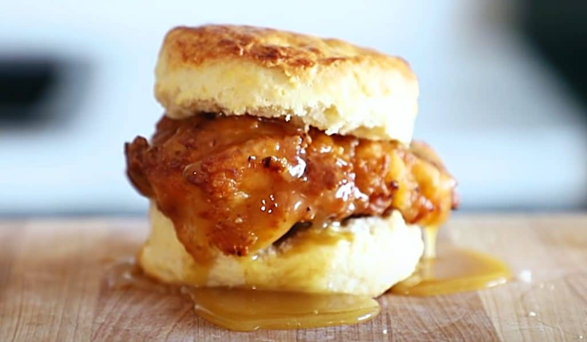

Honey Butter Chicken Biscuit

An at home and honestly a better take (in my opinion) on the well known Honey Butter Chicken Biscuit.
Ingredients
- 4 Boneless, skinless chicken breast (aobut 1 1/2 lb/680g)
- High-heat oil for frying (like canola, avocado, vegetable, lard, etc)
- Buttermilk Biscuits (about 8)
Honey Butter
You can buy your preferred honey butter or make your own to turnup the experience. One recipe you can try is
Dredge
- 2 cups (300g) unbleached all-purpose flour
- 1 tbsp (18g) kosher salt
- 1 tsp (3g) smoked paprika
- 1 tbsp (8g) garlic powder
- 1 1/2 tsp (1g) cracked black pepper
Marinade
- 2cups (500ml) buttermilk
- 2 tsp (6g) white pepper
- 1 tbsp (8g) garlic powder
- 1 tbsp (8g) onion powder
- 1 1/2 (9g) kosher salt
- 1 tbsp (8g) smoked paprika
Steps
- Prepare the marinade in large bowl, commmbine the buttermilk. gochujang (if using), salt, whitepepper, garlic powder, onion powder, and smoked paprika. Whisk together until throughly combined.
- Cut each chicken breast in half widthwise. Place the thicker halves between 2 pieces of plastic wrap and pound into even thickness to match the thinner halves, 1/2 to 3/4 inch thick.
- place each piece of chicken into the buttermilk mixture, and cover with plastic wrap. Let marinade in the refrigerator for 1 hour or overnight. Make the buttermilk biscuits while the chicken marinades, just before cooking the chicken so they're fresh.
- Fill a large deep castiro skillet or heavy-bottomed pot with about 2 1/2 inches of oil. Heat over medium heat until it reaches 350*F (180*C). Adjust heat up and down to maintain that temperature.
- While oil heats, oooreoare the dregde. In a medium boel, whisk together the flour, salt, smoked paprika, garlic powder, pepper, and serrano powder (if using) until combined.
- Drizzle 2 to 3 tablespoons (30-45ml) of the marinade into the flour mixture, if desired, and toss ot around. (This gives you some extra flaky bits on the chicken.)
- Working 1 piece at a time, remove the chicken from the buttermilk mixture, allowing the liquid to drip off. Place into the dredge, pressing very firmly into the chicken to make sure it's thoroughly coated, and repeat with the remaining chicken.
- Working 2 or 3 pieces at a time so the skillet isn't overcrowded, carefuly place breaded chicken in the oil(dropping away from you),andfry for 5 to 7 minutes, or unitl golden brown. The chicken is done when it reaches an internal temperature of 165*F (75*C). Place on a wire rack in a rimmed backing sheet to drain.
- Prepare the honeybutter in a small pot, combine the wildflower honey and avocado honey () over medium heat, constantly whisking until melted together. Once the honey is hot turn off the heat and add the sage. Continue whisking constantly.
- Whisk the salted butter until fully emulsified into a smooth and thickened honey butter. Remove the sage leaves before serving.
- Open each buttermilk biscuit,place a piece of chicken on the bottom, drizzle generously with the honey butter, and top with the other half of the biscuit and enojoy!